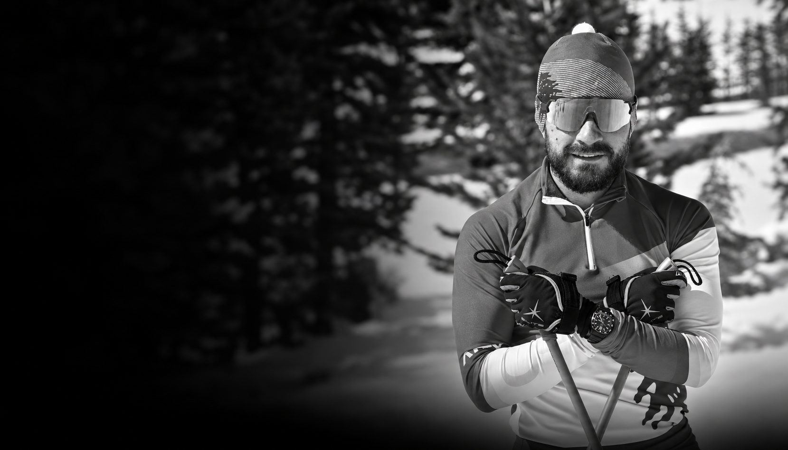
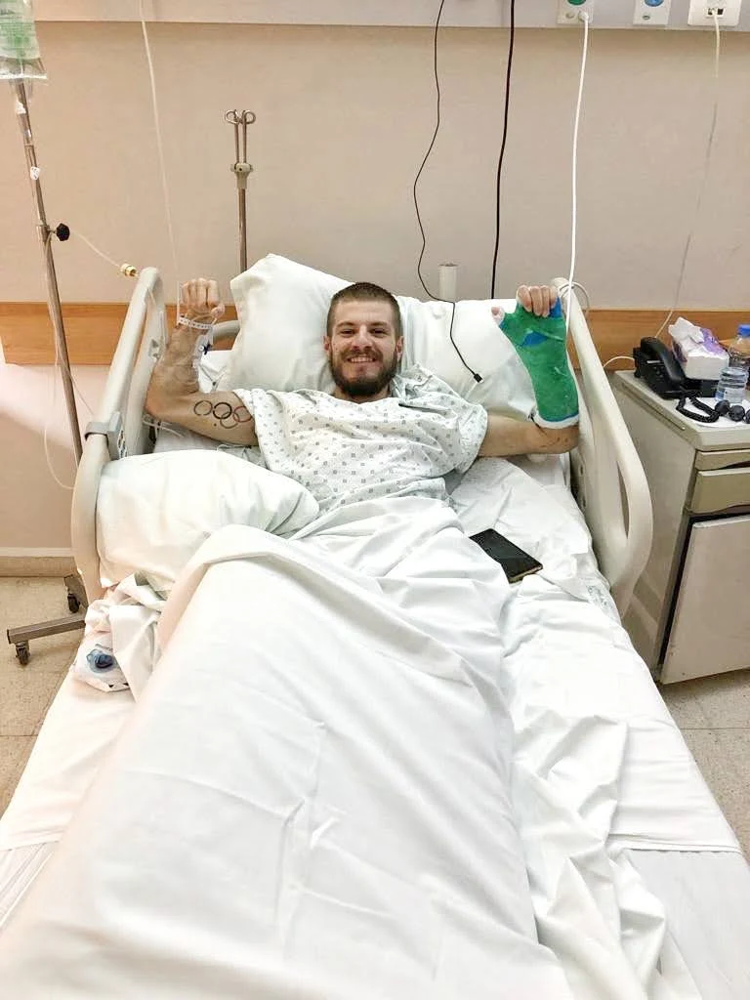
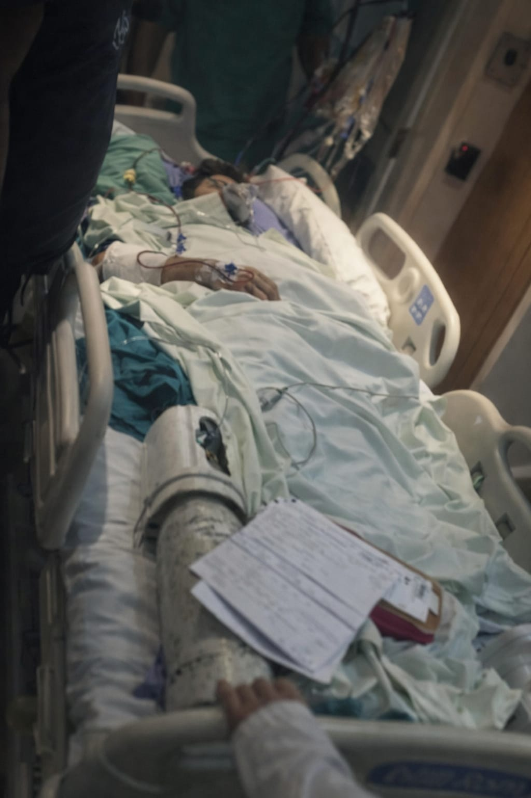
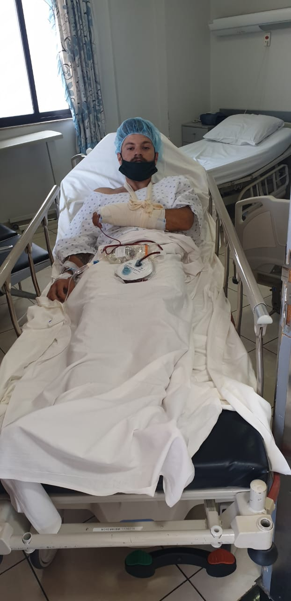
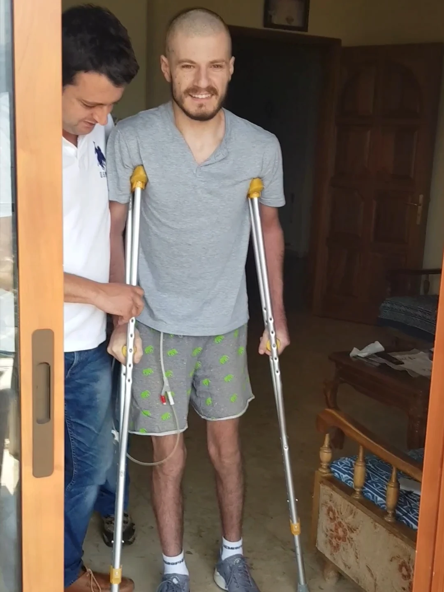
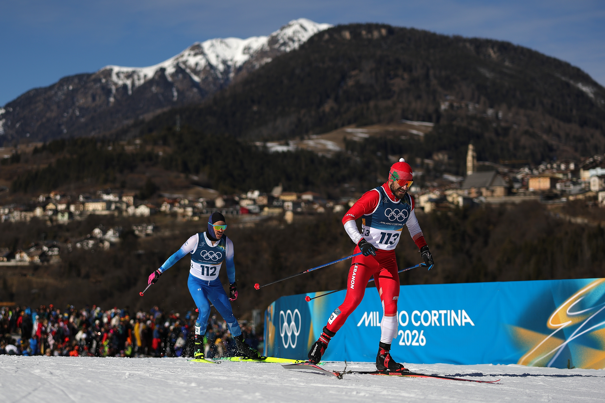

FIRST
Lebanese Olympic qualifier
First Lebanese in history to qualify for the Olympic Games in cross-country skiing.

I had represented Lebanon at the Olympics. A year later, I was told I might never walk normally again after a 14-metre fall from a cliff. But I felt driven to question limits.
That wonder, that curiosity became the drive for my journey through life. This path, forged from necessity and a refusal to accept perceived and imposed limitations, has been anything but conventional.
First Lebanese in history to qualify for the Olympic Games in cross-country skiing.
PyeongChang 2018
Milano Cortina 2026
Cross-country skiing
Cross-country skiing
TEDxMUBS
Rising from the Ashes
I've had to lean into resilience, adaptability, and the human spirit’s capacity to surpass what seems insurmountable — broken hips, a broken and dislocated elbow and wrist, a torn urethra and ligaments, a paralysed leg, and 9 surgeries.
That limitless approach has fueled my life — from turning a critical recovery period into winning the XC skiing Lebanese championship 3 years later, to qualifying for the Olympic Games that once seemed impossible.
Along the way, I’ve celebrated remarkable victories and faced defeats and tragedy, learning and growing from each experience. These moments have shaped who I am today—an experienced coach and speaker, drawing on both professional knowledge and lived experience to help others build strength, overcome setbacks, and pursue their potential.




Every step of the way, I've had to

Over the years, I’ve been honored to share my story around the world and across Lebanon from the Olympic Channel and international publications in more than 15 languages to national television on MTV, LBC, and Al Jadeed, and from The Ricardo Karam Experience podcast and Mesh Masrahiye to the TEDx stage and audiences at universities and in the private sector. My journey has also been featured by DW, Süddeutsche Zeitung, Sport360, L’Orient-Le Jour, CNN Arabic, and The National, taking the story of my return to the Olympic stage far beyond Lebanon.